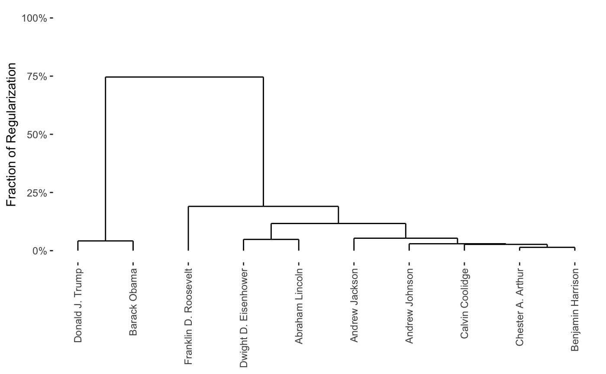

CARP (Convex Clustering) Solution PathCARP.RdCARP returns a fast approximation to the Convex Clustering
solution path along with visualizations such as dendrograms and
cluster paths. Visualizations may be static, interactive, or both.
CARP(X, verbose = 1L, interactive = TRUE, static = TRUE, ..., control = NULL)
| X | The data matrix (\(X \in R^{n \times p}\)): rows correspond to the observations (to be clustered) and columns to the variables (which will not be clustered). |
|---|---|
| verbose | Any of the values |
| interactive | A logical. Should interactive paths and dendrograms be returned? |
| static | A logical. Should static paths and dendrograms be returned? |
| ... | Additional arguments used to control the behavior of |
| control | A list containing advanced parameters for the |
An object of class CARP containing the following elements (among others):
X: the original data matrix
n.obs: the number of observations (rows of X)
p.var: the number of variables (columns of X)
alg.type: the CARP variant used
X.center: a logical indicating whether X was centered
column-wise before clustering
X.scale: a logical indicating whether X was scaled
column-wise before centering
burn.in: an integer indicating the number of "burn-in"
iterations performed
k: the number of neighbors used to create sparse clustering weights
phi: the scale factor of the RBF kernel used to calculate
clustering weights
carp.dend: If static=TRUE, an dendrogram (object of
class hclust) containing
the clustering solution path
carp.cluster.path.vis: The CARP solution path
static: a logical indicating whether static visualizations are available for this CARP object
interactive: a logical indicating whether interactive visualizations are available for this CARP object
CARP solves the Convex Clustering problem via
Algorithmic Regularization Paths. A seqeunce of clustering
solutions is returned along with several visualizations.
carp_fit <- CARP(presidential_speech[1:10,1:4])#>#>#>print(carp_fit)#> CARP Fit Summary #> ==================== #> #> Algorithm: #> #> Available Visualizations: #> - Static Dendrogram: TRUE #> - Static Cluster Path: TRUE #> - Interactive Visualization: TRUE #> #> Number of Observations: 10 #> Number of Variables: 4 #> #> Pre-processing options: #> - Columnwise centering: TRUE #> - Columnwise scaling: FALSE #> #> RBF Kernel Weights: #> - phi = 0.1 #> - K = 2 #> #> Raw Data: #> amount appropri british cent #> Abraham Lincoln 3.433987 2.397895 1.791759 2.564949 #> Andrew Jackson 4.248495 4.663439 2.995732 1.945910 #> Andrew Johnson 4.025352 3.091042 2.833213 3.332205 #> Barack Obama 1.386294 0.000000 0.000000 1.386294 #> Benjamin Harrison 4.060443 4.174387 2.302585 4.304065plot(carp_fit)